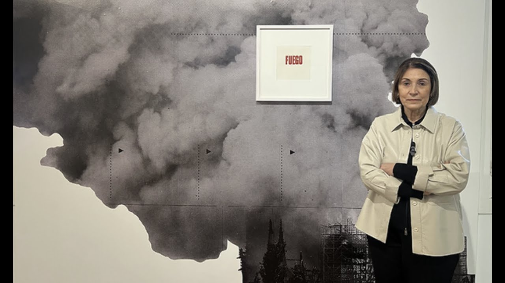

POPULARES
Margarita Paksa
Artista Multimedial
Pionera en el uso de materiales y en lo que hoy se denomina instalación. Dichas exploraciones espaciales y matéricas las inició a mediados de la década de 1960 con una exposición en la Galería del Centro Argentino por la Libertad y la Cultura (CALC) titulada Calórico (1965).
Fue profesora titular e investigadora en la Facultad de Bellas Artes de la Universidad Nacional de La Plata (UNLP) y docente titular de la cátedra Taller Proyectual de Escultura del Departamento de Artes Visuales en el Instituto Universitario Nacional del Arte (IUNA - hoy UNA).
En 1968 en Experiencias Di Tella presentó otra de sus emblemáticas creaciones, "Comunicaciones", un arenero con las siluetas de dos amantes ausentes y un reproductor wincofón que pasaba un disco con jadeos especialmente grabado y editado para la obra.
A lo largo de su trayectoria, la artista incursionó en diversidad de soportes y trabajó muchas de sus obras en series, como vehículo de ciertas preocupaciones en el tiempo: la dualidad, la identidad, temas sociales, políticos y de comunicación.